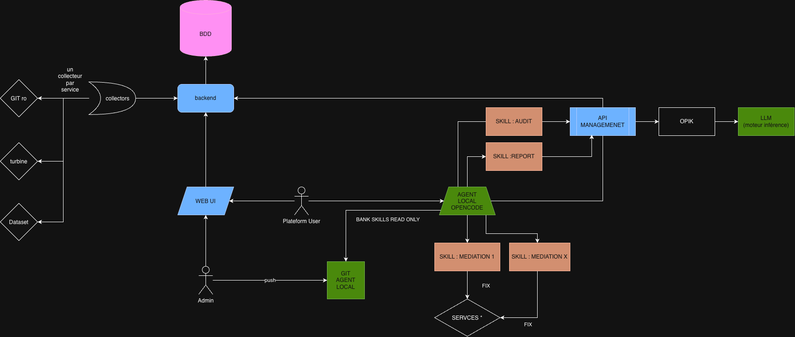

Une expertise qui devient un actif partagé
Une page Confluence décrit une méthode; un Skill la rend exécutable, versionnable et améliorable. Le savoir de l'équipe ne repart pas de zéro à chaque demande.
HOLOCRON / OPÉRATIONS CLOUD AUGMENTÉES
Holocron aide les équipes opérationnelles à partager leurs méthodes, suivre les recommandations et agir avec des agents qui disposent d'informations fiables sur chaque produit.
01 / POURQUOI
Les mêmes demandes reviennent; les traiter manuellement, une à une, mobilise l'expertise sans toujours la rendre réutilisable.
Aujourd'hui, un expert reçoit une demande, recherche les informations, réalise l'analyse et transmet sa réponse. La prochaine équipe peut devoir recommencer. Holocron transforme cette expérience répétée en méthode partagée, puis en suivi visible.
Une page Confluence décrit une méthode; un Skill la rend exécutable, versionnable et améliorable. Le savoir de l'équipe ne repart pas de zéro à chaque demande.
Réduire les copier-coller de métriques pour préparer des supports et les vérifications récurrentes faites à la main, pour se concentrer sur les problèmes complexes et l'amélioration continue.
Des méthodes et collectors réutilisables permettent d'étendre progressivement le suivi à plusieurs domaines et produits, sans faire croître au même rythme la charge manuelle.
Les équipes opérationnelles accèdent aux compétences partagées depuis la solution, gagnent en autonomie et sollicitent les experts pour les décisions qui nécessitent réellement leur jugement.
Prompt engineering, conception de Skills, évaluation des taux de précision et gestion de l'entraînement des modèles deviennent des compétences pratiquées sur nos sujets opérationnels. OPIK permet d'observer les réponses et d'en mesurer la qualité.
Les recommandations applicables, les constats collectés et les écarts deviennent une base commune pour prioriser le suivi et les remédiations.
L'IA ne remplace pas l'expertise de l'équipe. Elle change la façon de la transformer en valeur réutilisable pour les équipes produit.
CHANGEMENT DE MODÈLE
Le nouveau rôle de l'expert : moins répéter la même opération, davantage concevoir, tester et faire progresser une compétence qui bénéficie à tous.
02 / NOUVELLE MÉTHODE
C'est le principe de l'AI-Native Engineering : les opérations sont conçues avec l'IA comme partenaire, et l'expertise métier devient une compétence réutilisable.
Un Skill décrit une méthode métier et ses étapes. Un prompt précise la demande et le résultat attendu. Ensemble, ils apprennent à l'agent comment appliquer un savoir-faire défini par l'équipe.
Les demandes récurrentes et les recommandations deviennent des Skills et prompts, avec des étapes, des règles et des limites compréhensibles.
Les utilisateurs autorisés sollicitent les compétences partagées pour leurs besoins opérationnels, sans repartir de zéro à chaque fois.
Les retours, les cas de référence et les traces OPIK aident à évaluer la précision des réponses, puis à améliorer les Skills et prompts.
03 / HOLOCRON, LE CONTEXTE PRODUIT
Le Skill apporte la méthode. Holocron apporte les informations réelles dont l'agent a besoin pour l'appliquer.
Holocron suit le produit pendant tout son cycle de vie, du premier environnement jusqu'à l'exploitation. Des collectors ciblés vérifient les exigences et recommandations à partir des sources qui décrivent réellement le produit.
Les constats sont centralisés, puis rendus accessibles par API. L'agent peut alors analyser l'état du produit, préparer un rapport ou proposer une remédiation à valider par l'équipe.
Ce qui doit être conforme ou présent sur le produit.
Ce qui est réellement détecté dans les sources ciblées.
Un résultat disponible dans le Web UI et via l'API pour l'agent.
Holocron établit les faits; le Skill donne la méthode; l'équipe garde la décision.

Les collectors établissent les faits; l'agent utilise ces données avec les compétences des équipes. OPIK rend les appels au LLM observables.
04 / REPORTING
Le Web UI restitue clairement l'état des grandes remédiations opérationnelles demandées aux Globals, notamment sur les services de la plateforme GTDP.
À partir des constats consolidés par Holocron, les responsables peuvent suivre les demandes de conformité et les recommandations à plusieurs niveaux. L'objectif est de passer d'une vision globale du parc au détail qui permet de comprendre où se situe un écart et quel produit est concerné.
Suivre l'avancement général des recommandations et remédiations, avec un focus possible sur la plateforme GTDP et ses services.
Comparer les statuts de suivi par domaine opérationnel et repérer les thèmes qui concentrent les écarts.
Retrouver les statuts, constats collectés, demandes de conformité et recommandations associés à chaque produit.
05 / EXEMPLES
Partir de l'état réel, le comparer aux recommandations, puis aider l'équipe à décider de la suite.
S'assurer que les infrastructures de production sont à jour et conformes.
terraform plan sur les stacks de production pour détecter les écarts, sans appliquer de changement.No changes, des sub-skills proposent le code de remédiation ou guident une mise à jour sûre, à valider par l'équipe.Vérifier que les standards de monitoring (OOMKill, APM, Logs, SLI/SLO) sont appliqués sur les produits.
Réduire la charge de collecte et de préparation des revues de service.